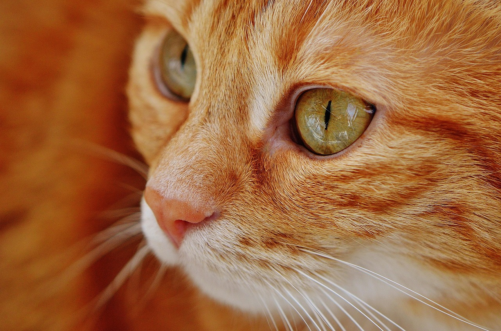
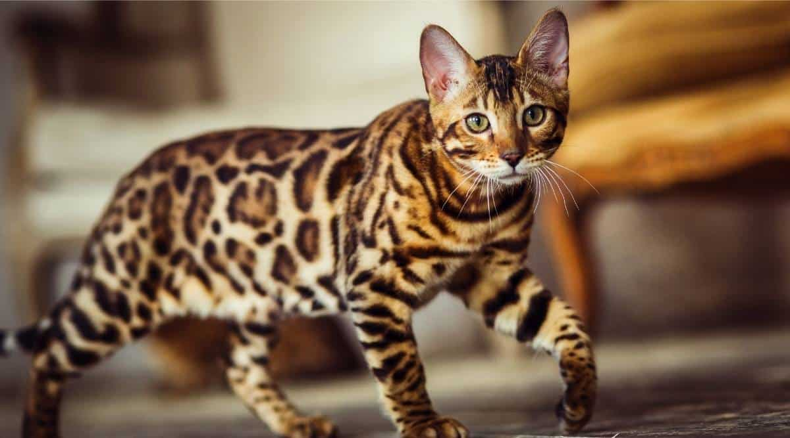

Dicover about cats



Cat species explained: The one most of us know is the domestic cat (Felis catus), which humans have lived with for thousands of years. And yet, they still pretend we’re their staff.
Here are a few basic cat facts to wow your friends:
<Cats walk on their toes like ballerinas
Their whiskers detect air shifts and tiny movements
They sleep about 13–16 hours a day (talk about goals)
They sleep about 13–16 hours a day (talk about goals) They can jump six times their body length
By the way, what is a group of cats called?
It’s called a clowder—yes, really! Some people also say a glaring when they don’t know each other well (sounds about right).
Year:2026
Copyright ©